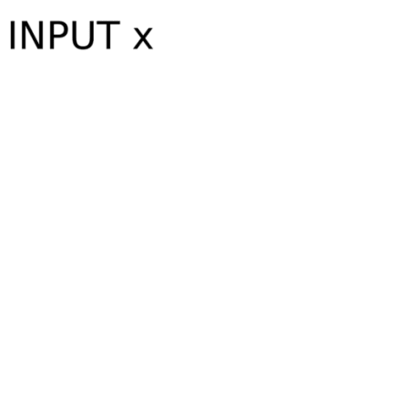
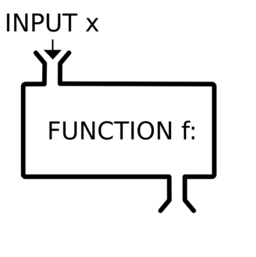
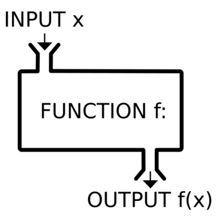

L6: While Loops and Functions
![]()
While Loops
Introduction
While loops are helpful because they let the code run until the user decides to quit the program.
Thus, they set up infinite loops until the user does something to end the loop.
A while loop tests an initial condition. If the condition is true, the loop starts executing.
Every time the loop finishes, the condition is reevaluated.
When the condition becomes false, the loop stops executing.
While Loops
while syntax
While Loops
Syntax
- A while loop needs an initial condition that starts true.
- The
whilestatement includes a condition to test.
- All the code in the loop will run if the condition remains true (e.g., numeric comparisons, boolean values).
- As soon as something in the loop changes the condition such that the test no longer passes, the loop stops executing.
- Any code defined after the loop will run at this point.
While Loops
Example
A game stays active as long as the player has enough power.
Python
# The character's health starts at 10.
health = 5
# The character continues adventuring as long as their health is above 0.
while health > 0:
print(f"You are still adventuring, because your health is {health}")
# Your adventure code would go here, which includes events that can decrease health.
# We can simulate that by reducing the health by 1 each iteration.
health -= 1
print("\nOh no, your health dropped to 0! You can no longer continue the adventure.")While Loops
Exercise
- Objective: Create a countdown timer that counts down from a specified number to 0.
- Starting Point: You will start with a variable
countset to 10. - Task: Use a
whileloop to print the current value ofcountand then decrement the value ofcountby 1. - Condition: The loop should continue running if the
countis greater than 0. - End Message: When the loop ends, print “Time is Up!”
While Loops
Exercise
Current count is 10
Current count is 9
Current count is 8
Current count is 7
Current count is 6
Current count is 5
Current count is 4
Current count is 3
Current count is 2
Current count is 1
Time's up!While Loops
Using while loops to process items in a list
We can pop items out of a list.
We can use a while loop to pop items from a list one at a time.
Let us say we want to do the following:
- Initialize lists of unconfirmed and confirmed users.
- Iteratively pops users from
unconfirmed_usersand prints a confirmation message for each. - Appends each confirmed user to
confirmed_users. - Prints the (now empty) list of unconfirmed users.
- Prints the list of confirmed users.
While Loops
Using while loops to process items in a list
Python
# Start with a list of unconfirmed users and an empty list of confirmed users.
unconfirmed_users = ['Ada', 'Billy', 'Clarence', 'Daria']
confirmed_users = []
# Work through the list, and confirm each user.
while len(unconfirmed_users) > 0:
# Get the latest unconfirmed user, and process them.
current_user = unconfirmed_users.pop()
print(f"Confirming user {current_user}...confirmed!")
# Move the current user to the list of confirmed users.
confirmed_users.append(current_user)
print("Confirmed users:")
for user in confirmed_users:
print('- ' + user)Confirming user Daria...confirmed!
Confirming user Clarence...confirmed!
Confirming user Billy...confirmed!
Confirming user Ada...confirmed!Confirmed users:- Daria
- Clarence
- Billy
- AdaWhile Loops
Accidental infinite loops
We can use a while loop to run until a defined action is completed, such as emptying a list.
We should avoid a situation where we have an infinite loop.
1
1
1
1
1Why does this output never stop?
While Loops
Accidental infinite loops
The infinite loop is because there is no way for the test condition ever to fail.
While Loops
Accidental infinite loops
current_numberis set to 1 and remains unchanged.
- A new variable,
count,is introduced to track the number of times the loop has run.
- The
whileloop runs as long as thecountis less than 5
- Inside the loop, the number
1is printed, and the count is incremented by1after each iteration.
Some thoughts
You will unavoidably create an infinite loop at some point.
When you do, interrupt the process.
Infinite loops will not be a real problem until you use them in a program when some users run your program on their machines.
Functions
Introduction
A function is a block of code that only runs when called.
You can pass input values or data, known as arguments, into a function.
The function performs some operations with the data used as input
The function should produce an output as a result.
Functions
Introduction

Functions
Introduction

Functions
Introduction

Functions
Introduction Functions
This is what a function looks like
Functions
Introduction
To define functions, we need:
def- the syntax necessary to initiate a function
my_function- the name of the function which has to describe well what it does
argument_one/two- the arguments of the function which could change whenever we evaluate our function
docstring- the section marked with''', which explains and documents what our function does
return- when the function executes the code, we should see a value as a result.
Functions
Examples
Here is, for example, a function.
The function evaluates a statement and produces an output.
Functions
Examples
Here is, for example, a function.
The function evaluates a statement and produces an output.
This is what we had before using an if-else statement
Functions
Examples
Here is, for example, a function.
The function evaluates a statement and produces an output.
This is what we had before using an if-else statement
Functions
Examples
This is how we write this as a function called check_positive
Functions
Examples
This is how we write this as a function called check_positive
Functions
Examples
This is how we write this as a function called check_positive
Functions
Examples
This is how we write this as a function called check_positive
Functions
Examples
This is how we write this as a function called check_positive
Functions
Examples
This is how we write this as a function called check_positive
Functions
Examples
This is how we write this as a function called check_positive
What will the following return?
Functions
Examples
This is how we write this as a function called check_positive
What will the following return?
Functions
Examples
This is how we write this as a function called check_positive
What about the following?
Functions
Examples
This is how we write this as a function called check_positive
What about the following?
Functions
Examples
This is how we write this as a function called check_positive
What about the following?
Functions
Examples
This is how we write this as a function called check_positive
What about the following?
Functions
Examples
Let us now create a third condition: x=0
Functions
Examples
Let us now create a third condition: x==0
Functions
Examples
Let us now create a third condition: x==0
Functions
Examples
Let us now create a third condition: x==0
Functions
Examples
Let us now create a third condition: x==0
Functions
Why Use Functions?
- Code Reuse: Write code once and use it multiple times.
- Organization: Break down tasks into smaller, manageable pieces.
- Reduce Redundancy: Avoid repeating the same code in multiple places.
- Maintainability: It is easier to update or debug code in one place.
- Readability: Makes code cleaner and more understandable.
- Scalability: Functions allow projects to grow without becoming unmanageable.
Functions
Examples
Here is another example of a function.
We create a function called add_five with one parameter x.
The function calculates and returns the sum of x and 5.
Functions
Examples
Here are the elements of the function:
- Defining the function (
def)
- A function name (
add_five)
- Parameter(s), inside parentheses and separated by commas (
x)
Functions
Examples
Here are the elements of the function:
- Code (
x_plus_five = x + 5)
- Returned value (
return x_plus_five)
Functions
Examples
The function add_five, can be used to calculate the sum of various numbers and five.
Functions
Examples
The function add_five, can be used to calculate the sum of various numbers and five.
Here is what happens if we use 77 as a parameter
Functions
Examples
We can, of course, assign the result of a function to an object.
We can write the same function in a different way
Functions
Exercises with Functions 1
Objectives
Write a function that classifies a given number into one of three categories:
- Positive: If the number is greater than 0
- Negative: If the number is less than 0
- Zero: If the number is exactly 0
Let’s say the number is 3.
The output should look like the following:
Functions
Exercises with Functions 1
Objectives
Write a function that classifies a given number into one of three categories:
- Positive: If the number is greater than 0
- Negative: If the number is less than 0
- Zero: If the number is exactly 0
Functions
Exercises with Functions 1
Objectives
Write a function that classifies a given number into one of three categories:
- Positive: If the number is greater than 0
- Negative: If the number is less than 0
- Zero: If the number is exactly 0
Functions
Exercises with Functions 2
Objective
Write a Python script that classifies a person into different age groups using a function based on the following criteria:
- Child: 0 to 12 years old
- Teenager: 13 to 19 years old
- Adult: 20 to 59 years old
- Senior: 60 years old and above
Let’s say the age is 15.
Functions
Exercises with Functions 2
Instructions
Write a Python script that classifies a person into different age groups using a function based on the following criteria:
Functions
Exercises with Functions 2
Instructions
Write a Python script that classifies a person into different age groups using a function based on the following criteria:
Functions
Exercises with Functions 3
Objective
Write a Python script that classifies temperatures into different categories using a function based on the following criteria:
- Cold: Less than 50 degrees Fahrenheit
- Moderate: 50 to 75 degrees Fahrenheit
- Warm: 76 to 90 degrees Fahrenheit
- Hot: More than 90 degrees Fahrenheit
Functions
Exercises with Functions 3
Use if-else statements within a function to classify the temperature into one of the categories.
Functions
Exercises with Functions 3
Use if-else statements within a function to classify the temperature into one of the categories.
Functions
Functions notes
A common problem when we first start programming is mixing the concepts of print and return.
print prints the value of a variable on the screen.
If this value is not saved somewhere, it will be lost.
Thus, return aims to return and preserve a value.
Conclusions
While loops enable repetitive execution until a specified condition is met, with careful handling needed to avoid infinite loops.
Functions enhance code reusability and organization, providing structure and scalability to programming tasks.
Combining loops and functions allows for efficient data manipulation and automation of repetitive tasks.
Thoughtful use of
returnversusprintensures clear outputs and preserves values for further computation.
Popescu (TEC): Lecture 6